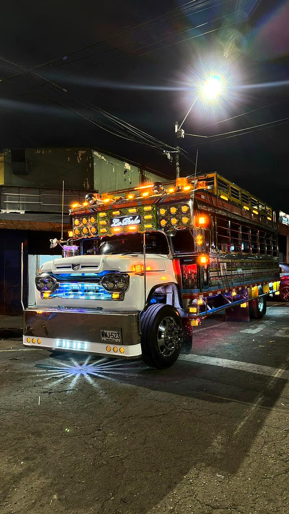
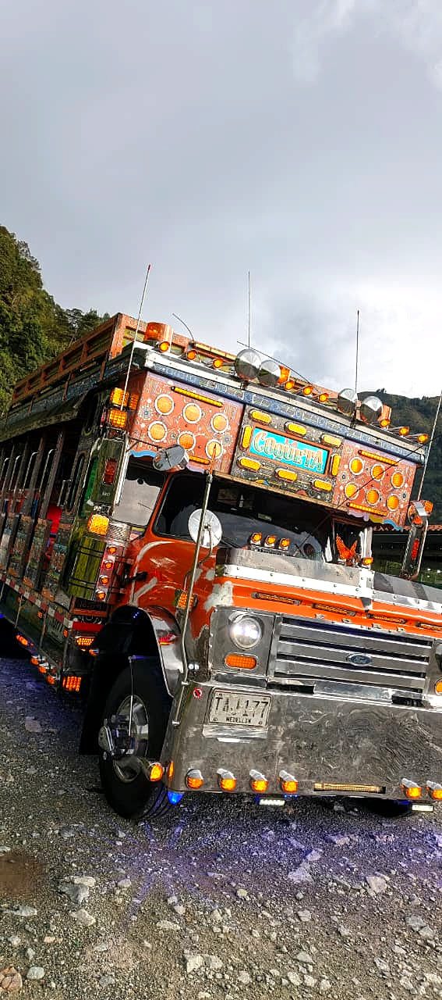

Dos chivas.
Dos historias.
Una sola rumba.
Cada una con décadas de carreteras antioqueñas en sus ruedas y una noche entera de fiesta por delante. Escoge la tuya y déjate llevar.
La Perla — 1959
"De las veredas de Marinilla al corazón de tu fiesta"Hay vehículos que nacen con alma propia. La Perla es uno de ellos. Desde 1959 recorrió las veredas de Marinilla, Antioquia, siendo testigo de generaciones, cosechas y tardes de pueblo. Luego la vida la llevó a Santa Elena, donde por tres años descansó en una finca de un jardinero silletero, rodeada de flores, sombreros y colores, siendo el telón de fondo perfecto para los recuerdos de quienes la visitaban.
En 2025 llegó a Medellín con una nueva misión: ser el escenario donde tú y los tuyos escriban la mejor noche del año. La Perla no es solo una chiva — es patrimonio vivo de Antioquia que hoy vibra al ritmo de la ciudad.

La Coqueta — 1954
"70 años de historia que hoy bailan contigo"Nacida en 1954 en las carreteras de San Roque, Antioquia, La Coqueta vivió décadas llevando familias campesinas entre montañas y pueblos, cargando historias, mercados y sueños paisas. Hoy, ese mismo espíritu viajero se viste de fiesta para recorrerte Medellín como nunca antes.
Su historia es también la de un sueño cumplido: su propietario la adquirió porque desde niño soñaba con tener una chiva propia. Con amor, tiempo y visión, la transformó pieza por pieza en una experiencia única — conservando su alma campesina pero añadiéndole todo lo que una noche épica merece.

¿Qué te espera adentro de nuestras chivas?
Nuestras chivas están equipadas para dar la fiesta más grande. Con capacidad para 50 personas, es perfecta para grupos que quieren vivir la noche en grande. Sonido profesional, inversor para DJ con RX y consolas, pista de baile, luces rítmicas y cámara de humo. Todo listo para que el único trabajo tuyo sea gozar.
¡Súbete a La Perla y vive la noche!